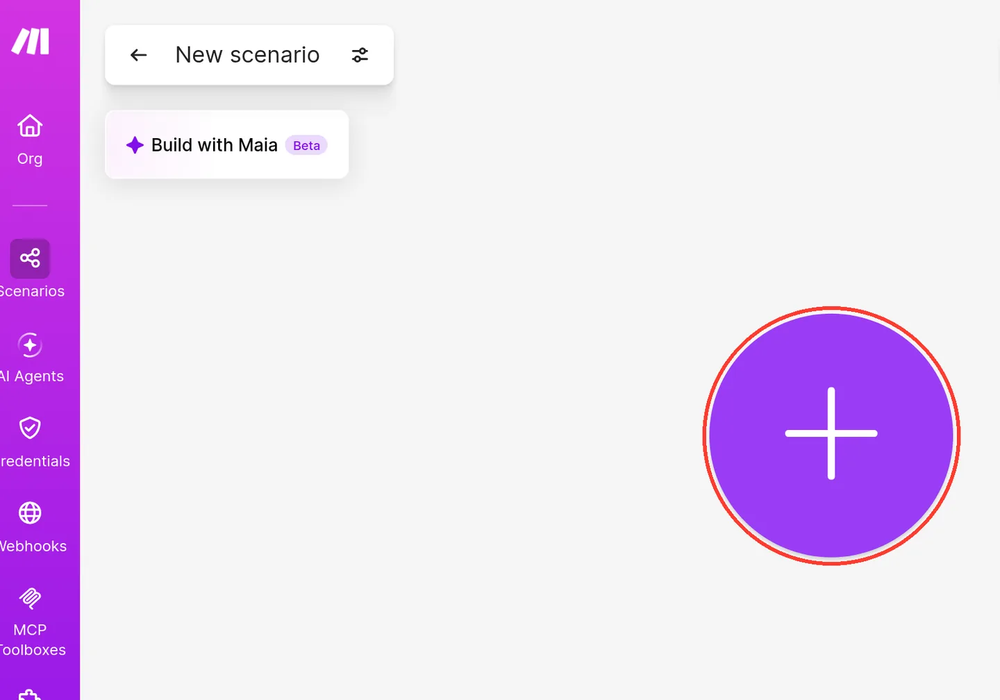
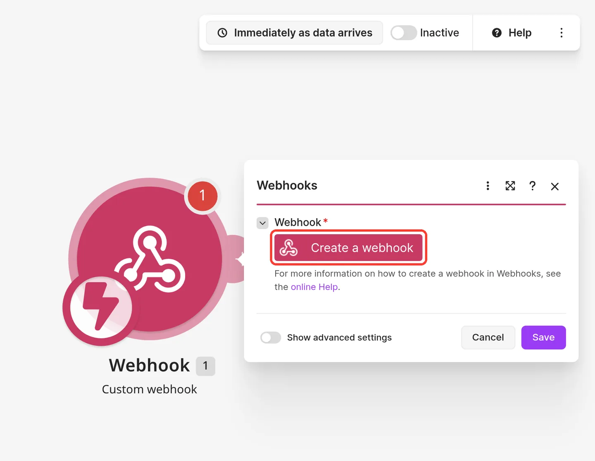
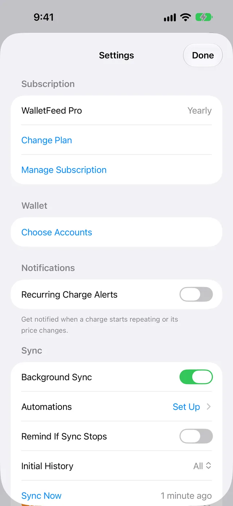
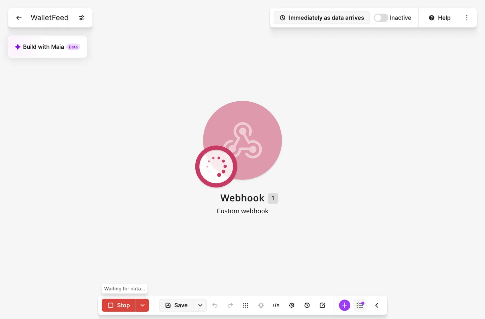
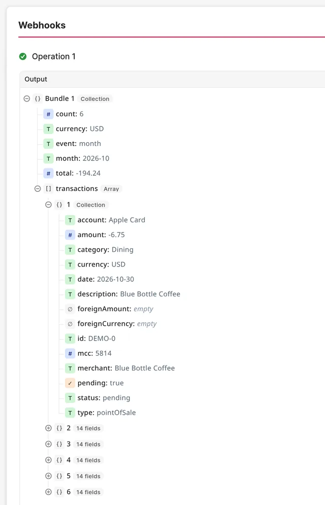
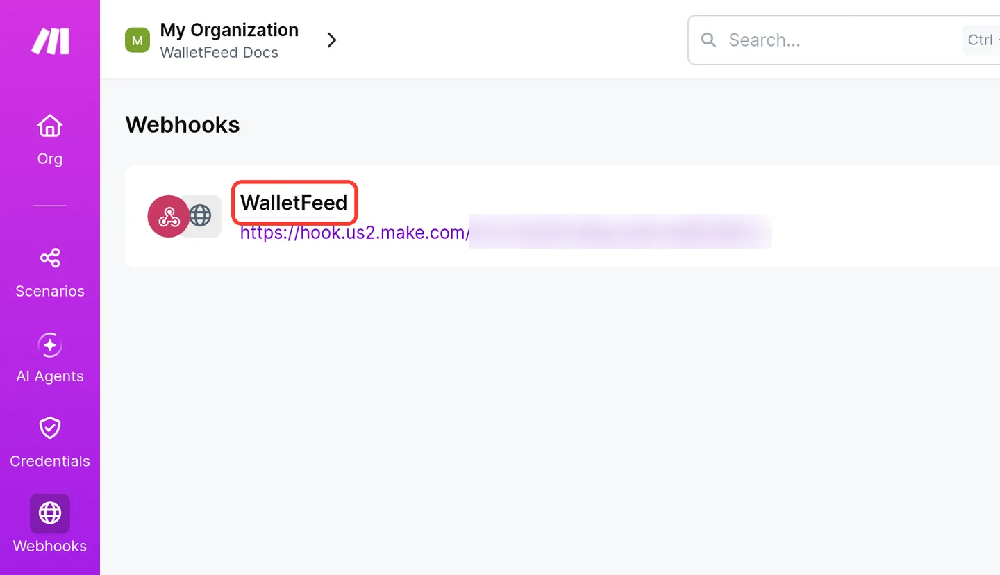

Send Apple Card transactions to Make
WalletFeed sends your Apple Card, Apple Cash and Savings transactions from your iPhone to a scenario in Make (previously Integromat). You add a Custom webhook in Make, then paste its URL into WalletFeed.
Before you start
You must have these items:
- An iPhone with iOS 26 or a newer version. WalletFeed is available only in the US.
- WalletFeed Pro, a subscription with a 1-week free trial, or a one-time Lifetime purchase.
- A Make account. To get an account, open Make's sign-up page. The Free plan has the Webhooks app.
- A computer with a web browser for the steps in Make. The screenshots show Make on a computer.
Step 1: Add a Custom webhook in Make
The webhook gives you a URL. WalletFeed sends your transactions to this URL.
-
On your computer, sign in to Make.
-
Click + Create scenario.

-
If a Scheduling message opens, click Got it.
-
If the Maia panel opens, click X on the panel.
Maia is not necessary for these steps.
-
In the scenario editor, click the large +.

-
In Search all apps or modules, type
Webhooks. -
Click the Webhooks app with the red icon.
Make shows the app Make first, with its webhook modules below it, for example List webhooks. The app Make is not correct for these steps.

-
In Triggers, click Custom webhook.
Custom mailhook is above Custom webhook. Custom mailhook is not correct for these steps.

-
Below Webhook, click Create a webhook.

-
In Webhook name, replace the name with
WalletFeed. -
Do not click + Add API key.
If the webhook has an API key, Make accepts only the requests that contain the key. WalletFeed cannot send an API key.
-
Click Save.

-
Below Webhook URL, click the copy button at the end of the URL.
Make does not show the full URL. If you select the text, you copy only a part of the URL.

-
Do not give the URL to other persons.
With the URL, a person can send data to your scenario.
-
Keep the scenario open.
Make must show Listening for data when you tap Add in WalletFeed.
Step 2: Add Make in WalletFeed
-
On your iPhone, open WalletFeed.
-
Optional: If you use Make's Free plan and select Each Transaction in step 8, set Initial History to Today.
With Today, Make receives only the transactions of this day. While the scenario is not active, Make keeps the transactions in a queue. On the Free plan, this queue can contain a maximum of 50 transactions. Settings shows the Sync section only with WalletFeed Pro.
-
Tap Settings (the gear button) at the top of the screen.
-
In the Sync section, set Initial History to Today.

-
Tap Done.
-
-
Tap Destinations.
-
Tap +.

-
In Automations, tap Make. You can also type
Makein the search field. -
If WalletFeed shows the WalletFeed Pro screen, get WalletFeed Pro on that screen. WalletFeed then opens the Make screen.
-
Paste the URL into Webhook URL. WalletFeed keeps the URL in the Keychain on your iPhone.
-
In Send, select Monthly or Each Transaction.
With Monthly, Make receives one request 5 days after the end of each month. The request contains all the transactions of that month. Monthly is the default.
With Each Transaction, Make receives one request for each new or changed transaction. Each request starts the scenario and uses credits.
-
Tap Add. WalletFeed sends a sample to Make.
With Each Transaction, the sample is one transaction, with
merchantWalletFeed andamount-4.2. With Monthly, the sample is one month that contains the same transaction. -
Read the message Send Transactions to Make?
The message tells you what Make receives, the Wallet accounts of the transactions and the start date.
-
Tap Send. If you tap Cancel, WalletFeed does not add the destination.
Destinations then shows the new destination with the name Make.
Step 3: Save the scenario in Make
-
On your computer, make sure that Make shows Detected data with the fields of the sample.
With Monthly, Make shows “6 values detected and ready to map”. These values include
monthandtransactions. With Each Transaction, Make shows “15 values detected and ready to map”.
-
Click Save in the webhook panel.
-
Optional: At the top of the editor, replace the scenario name with
WalletFeed. -
Click Save in the toolbar at the bottom of the editor.
If a webhook is not in a scenario for more than 5 days, Make deactivates the webhook. Then WalletFeed cannot send transactions to it.

Step 4: Add modules and activate the scenario
With Monthly, you can add an Iterator as the first module after the webhook. The Iterator divides the transactions of the month into bundles. Each bundle contains one transaction. Each module after the Iterator then receives one bundle at a time. The Iterator uses 1 credit, and each module after it uses 1 credit for each transaction.
To add an Iterator, do these steps:
- Click the small + on the right side of the webhook module.
- In Search all apps or modules, type
Iterator. - Below Flow Control, click Iterator.
- In the Array field, select
transactions[]. - Click Save in the Iterator panel.
To complete the scenario, do these steps:
-
Add the other modules of the scenario.
With Each Transaction, or after an Iterator, these modules can use each field of a transaction, for example
amountormerchant. Without an Iterator, the modules can use the fields of the month, for examplemonthortotal. -
Click Save in the toolbar at the bottom of the editor.
-
Optional: To start the scenario one time, click Run once.
If the queue of the webhook is empty, Make shows Waiting for data... until it receives a request.

-
If Make shows Unprocessed data in webhook queue, click Use existing data.
Make starts the scenario one time with the first request in the queue.
-
Optional: Look at the fields in Output.

-
To activate the scenario, click the Inactive switch at the top of the editor.
With Immediately as data arrives, the scenario starts each time that Make receives a request.
-
If Make shows Unprocessed data in webhook queue, click Process old data.
Make then starts the scenario one time for each request in the queue. If you click Delete old data, Make removes these requests, and the scenario does not get their transactions.
Data that Make receives
Your transactions go from your iPhone directly to Make. WalletFeed has no account and no WalletFeed servers. After Make receives your transactions, Make's terms are applicable to them.
With Monthly, WalletFeed sends one HTTP request for each month. The request has these fields:
| Field in Make | Value |
|---|---|
event |
month |
month |
The month in your time zone, for example 2026-10 |
count |
The number of transactions in transactions |
total |
All the amount values of the month, added together, for example -16.95 |
currency |
The currency code of total, for example USD |
transactions |
The transactions of the month, newest first. Each transaction has the fields in the next table, but not event. |
If the month has more than one currency, total and currency have no value.
With Each Transaction, WalletFeed sends one HTTP request for each change. The request has these 15 fields, and Make shows a field without a value as empty:
| Field in Make | Value from Wallet |
|---|---|
event |
created the first time that WalletFeed finds the transaction in Wallet, and updated after a change |
id |
The transaction ID from Wallet, which stays the same when the transaction changes |
date |
The day of the purchase in your time zone, for example 2026-10-30 |
merchant |
The merchant name, or the description if Wallet has no merchant name |
amount |
A negative number for a purchase, for example -6.75, and a positive number for a refund or a payment |
currency |
The currency code, for example USD |
category |
The WalletFeed category, for example Dining |
status |
The Wallet status, for example pending, or booked after the charge posts |
pending |
true when status is pending or authorized, and false after the charge posts |
account |
The Wallet account, for example Apple Card |
description |
The description from Wallet |
type |
The type of transaction, for example pointOfSale or refund |
mcc |
The merchant category code, for example 5814 |
foreignAmount |
For a purchase in a different currency, the value in the currency of the merchant |
foreignCurrency |
The currency code of foreignAmount |
foreignAmount is also a negative number for a purchase and a positive number for a refund. With Each Transaction, if the bank rejects a pending charge or Wallet removes a transaction, Make receives a request with only two fields. These fields are id, and event with the value deleted.
Sync times and changes
To send transactions to Make while WalletFeed is closed, Background Sync must be on in Settings › Sync. Background Sync is on until you set it to off. After your iPhone starts again, WalletFeed does not send transactions until you type your iPhone passcode one time.
Monthly
WalletFeed sends each month at the first sync on or after the 6th day of the next month. For example, Make receives October on or after November 6. If the filter keeps no transactions of a month, Make receives nothing for that month.
If a charge is pending when WalletFeed sends the month, its pending value is true. WalletFeed does not send the charge again after it posts. After WalletFeed sends a month, it does not send changes to that month.
If a sync stops after WalletFeed sends a month, Make can receive the same month two times. A scenario can use a Make data store to find a month value that it received before.
Each Transaction
While WalletFeed is open, Make receives changes in seconds. When WalletFeed is closed, iOS starts WalletFeed in approximately 1 hour or less after a change in Wallet.
Make receives a pending charge again when it posts. Then event is updated and status is booked, with the same id. For a refund, amount is a positive number and type is refund.
Each request starts the scenario one time. Thus, an update also uses credits. If WalletFeed stops during a sync, WalletFeed can send the same changes again, with the same event value. A scenario that adds rows must first try to find a row with the same id. If the scenario finds that row, it must change the row.
Send previous transactions
A new Make destination also receives previous transactions, from the start date in Settings › Sync › Initial History. Initial History is All until you change it.
With Each Transaction, Make receives a maximum of 30 days of previous transactions. With Monthly, there is no limit of 30 days. The start date moves back to the first day of its month, and Make receives one request for each previous month. WalletFeed sends the newest month first.
To send more transactions, use Send History:
-
On your computer, make sure that the scenario is active in Make.
-
On your iPhone, open WalletFeed.
-
In Destinations, tap the Make destination.
-
Tap Send History.
-
Tap a period: 30 Days, 90 Days, 1 Year or All.
-
In the message Send History to Make?, tap Send.
With Monthly, the message shows “Each month runs your scenario once.” With Each Transaction, it shows “Each transaction runs your scenario.”
WalletFeed sends the newest transactions first. While it sends, the destination screen shows Sending History and a count, for example 20 of 50. With Monthly, the period starts on the first day of its month, and Send History also sends the months that Make received before. WalletFeed uses the filter for Send History. Each request uses credits in Make, and the Free plan has 1,000 credits each month.
To stop Send History, do these steps:
- Tap Send History.
- Tap Stop Sending.
The transactions that Make received stay in Make.
Change or remove the destination
To change the transactions that go to Make, change the filter of the Make destination. With Each Transaction and no filter, you can tap Turn On Filter below Send. To stop the destination for a period, set the Enabled switch to off.
To change Send, do these steps:
-
In WalletFeed, open the Make destination.
-
In Send, select Monthly or Each Transaction.
With Monthly, Make receives the month of the change 5 days after the end of that month. The request contains all the transactions of the month. These include the transactions that Make received before. With Each Transaction, Make receives the changes from that time. To send previous transactions, use Send History.
-
On your computer, open the scenario in Make.
-
If Make shows Edit, click Edit.
-
Click the webhook module.
-
Click Detect new values.
-
On your iPhone, tap Send Test on the Make destination screen.
The sample has the fields of your new selection in Send.
-
On your computer, click Save in the webhook panel.
-
Make sure that the modules of the scenario use the new fields.
With Each Transaction, the requests have no
transactionsfield, and an Iterator is not necessary. -
If you selected Each Transaction and the scenario has an Iterator, right-click the Iterator.
-
Click Delete.
-
Click Save in the toolbar at the bottom of the editor.
In Webhook, the destination screen shows only the first part of the URL, for example hook.us2.make.com.
To find the URL of the webhook again, do these steps:
-
On your computer, in the Make sidebar, click Webhooks.
-
Click WalletFeed.

-
Below Webhook URL, click the copy button.

To replace the URL, for example after you add a new webhook, do these steps:
-
In WalletFeed, open the Make destination.
-
Tap Replace URL.
-
Paste the URL into Webhook URL.
-
Tap Replace.
Before WalletFeed keeps the new URL, it sends a sample. If Make does not accept the sample, WalletFeed keeps the previous URL.
To remove the destination, do these steps:
- In WalletFeed, open the Make destination.
- Tap Delete.
- In the message Delete Make?, tap Delete.
The transactions that WalletFeed sent stay in Make.
To also remove the webhook, do these steps on your computer:
- In the Make sidebar, click Webhooks.
- Click ⋮ for the WalletFeed webhook.
- Click Delete.
- In Please confirm, click Delete.
- In Confirmation required, click OK.
Make also removes the transactions that are in the queue of the webhook, and the scenario stops.
If there is a problem
If you cannot tap Add
The text in Webhook URL is not a Make webhook URL. A Make webhook URL starts with https://hook., for example https://hook.us2.make.com/.
- In Make, copy the URL again with the copy button.
- Paste the full URL into Webhook URL.
If WalletFeed shows “The webhook refused the test”
Make did not accept the sample, for example because the webhook has an API key, or because Make removed or deactivated the webhook.
- In Make, add a new Custom webhook without an API key, as in Step 1.
- Copy the URL of the new webhook with the copy button.
- In WalletFeed, paste the URL into Webhook URL.
- Tap Add.
If WalletFeed shows “Too many requests. Try again in a few minutes.”
Make accepts a maximum of 300 requests in 10 seconds.
- Wait some minutes.
- Tap Add again.
If Make does not show the fields
Make did not show Listening for data when WalletFeed sent the sample.
- On your computer, in the webhook panel, click Detect new values.
- On your iPhone, open the Make destination in WalletFeed.
- Tap Send Test.
- On your computer, make sure that Make shows the fields of the sample.
- Click Save in the webhook panel.
If WalletFeed shows “Rejected (HTTP 400)”
Make rejects requests when the queue of the webhook is full. While the scenario is not active, Make keeps the requests in the queue. On the Free plan, the queue can contain a maximum of 50 requests. The Webhooks page in Make shows the number of requests in the queue, for example 50/50.
-
On your computer, open the scenario in Make.
-
To activate the scenario, click the Inactive switch.
-
If Make shows Unprocessed data in webhook queue, click Process old data.
With Run once, Make starts the scenario for only one request in the queue.
-
On your iPhone, open Settings › Sync in WalletFeed.
-
Tap Sync Now.
-
If the Make destination shows Try Again, tap Try Again.
If WalletFeed shows “Rejected (HTTP 410)”
Make removed or deactivated the webhook. If a webhook is not in a scenario for more than 5 days, Make deactivates it.
- In Make, add a new Custom webhook, as in Step 1.
- Save the scenario, as in Step 3.
- In WalletFeed, open the Make destination.
- Tap Replace URL.
- Paste the new URL into Webhook URL.
- Tap Replace.
If the scenario starts only one time each month
Send is Monthly, which is the default. With Monthly, Make receives each month 5 days after the end of the month.
To receive each transaction after a change, do these steps:
- In WalletFeed, open the Make destination.
- In Send, select Each Transaction.
- On your computer, open the scenario in Make.
- If Make shows Edit, click Edit.
- Click the webhook module.
- Click Detect new values.
- On your iPhone, tap Send Test on the Make destination screen.
- On your computer, click Save in the webhook panel.
- If the scenario has an Iterator, right-click the Iterator.
- Click Delete.
- Click Save in the toolbar at the bottom of the editor.
If the scenario does not start for new transactions
The scenario is not active. Make keeps the transactions in the queue of the webhook.
- On your computer, open the scenario in Make.
- To activate the scenario, click the Inactive switch.
- If Make shows Unprocessed data in webhook queue, click Process old data.
If Make receives transactions only while WalletFeed is open
Background Sync is off, or your iPhone started again and you did not type its passcode.
- In WalletFeed, open Settings › Sync.
- Set the Background Sync switch to on.
- After your iPhone starts again, type its passcode one time.
Related
Updated October 30, 2026